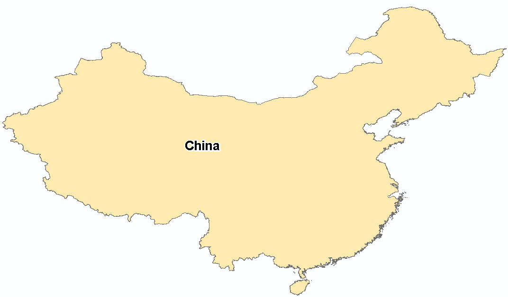
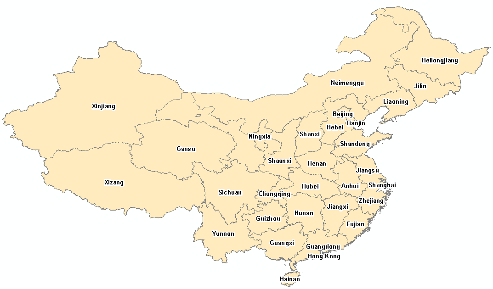

Parent and child analytical units
In the hierarchy of analytical units, the following roles of units are defined:
- parent unit – is an analytical unit at a higher hierarchical level than its child units, it represents a spatial aggregation of its child units
- child unit – are units on a lower hierarchical level than their parent, which usually geographically cover the whole area of their parent unit.
An analytical unit does not necessarily have one of these roles. Each unit can only have one parent unit. Each unit can have more than one child unit.
Example of hierarchical roles of analytical units in hierarchy tree
For this example, China is the parent unit for the Hong Kong, Xizang, Shandong (and other) child units. Shandong is the parent unit for Binzhou, and Binzhou is the parent unit for Bincheng and Boxing.
Bincheng and Boxing are at the lowest level of this hierarchy – they are child units of Binzhou and they have no child units of their own.
Example of hierarchical roles of analytical units in spatial context
parent unit = China (country level); child units = 33 Chinese provinces (GADM1)
